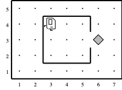
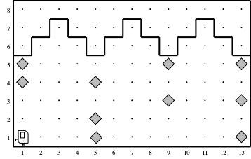
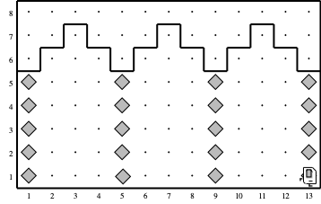
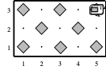
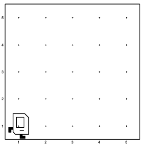
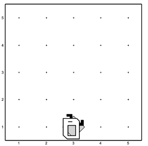

Assignment 1. Karel the Robot¶
This assignment consists of four Karel programs. Before you start on this assignment, make sure to read the handout (Using Karel with VS Code) in its entirety. When you are ready to start working on these programs, you need to:
Download the starter project
Edit the Karel program files so that the assignment actually does what it’s supposed to do. This will involve a cycle of coding, testing, and debugging until everything works.
Once you have gotten each part of the program to run correctly in the default world associated with the problem, you should make sure that your code runs properly in all of the worlds that we have provided for a given problem.
The four Karel problems to solve are described on the following pages.
Please remember that your Karel programs must limit themselves to the language features described in the Karel the Robot Learns Python. You may not use other features of Python (including variables, parameters, break, and return), even though the VSCode-based version of Karel accepts them.
Problem 1 (CollectNewspaperKarel.py)¶
Your first task is to solve a simple story-problem in Karel’s world. Suppose that Karel has settled into its house, which is the square area in the center of Figure 1.

Figure 1: Karel’s starting state for CollectNewspaperKarel¶
Karel starts off in the northwest corner of its house as shown in the diagram. The problem you need to solve is to get Karel to collect the newspaper. The newspaper, like all objects in Karel’s world, is represented by a beeper. You must get Karel to pick up the newspaper located outside the doorway and then to return to its initial position.
This exercise is simple and is meant to help you get you started programming with Karel. You can assume that every part of the world looks just as it does in the diagram: the house is exactly this size, the door is always in the position shown, and the beeper is just outside the door. Thus, all you have to do is write the sequence of commands necessary to have Karel:
Move to the newspaper,
Pick it up, and
Return to its starting point.
Although the program does not have many lines of code, it is still worth getting some practice with decomposition. In your solution, include a function for each of the three steps shown in the outline above.
Your program should run successfully in the following world:
CollectNewspaperKarel.w (default world)
Note that all Karel worlds are located in the worlds folder in the Assignment 1 project folder.
Problem 2 (StoneMasonKarel.py)¶
Your next task is to repair the damage done to the Main Quad in the 1989 Loma Prieta earthquake. In particular, Karel should repair a set of arches where some of the stones (represented by beepers, of course) are missing from the columns supporting the arches, as illustrated in Figure 2 (below).

Figure 2: An initial example world with broken arches that StoneMasonKarel must repair¶
Your program should work on the world shown above, but it should be general enough to handle any world that meets the basic conditions outlined at the end of this problem. There are several example worlds in the starter folder, and your program should work correctly in all of them.
When Karel is done, the missing stones in the columns should be replaced by beepers, so that the final picture resulting from the initial world shown in Figure 2 would look like the illustration in Figure 3 below.

Figure 3: Karel should repair the Main Quad to a structurally sound state after completion.¶
Karel’s final location and the final direction Karel is facing at the end of the run do not matter.
Karel may count on the following facts about the world:
Karel starts at the corner where 1st Avenue and 1st Street meet, facing east, with an infinite number of beepers in Karel’s beeper bag. The first column should be built on 1st Avenue.
The columns are always exactly four Avenues apart, so they would be built on 1st Avenue, 5th Avenue, 9th Avenue, and so on.
The final column will always have a wall immediately after it. Although this wall appears after 13th Avenue in the example figure, your program should work for any number of beeper columns.
The top of a beeper column will always be marked by a wall. However, Karel cannot assume that columns are always five units high, or even that all columns within a given world are the same height.
In an initial world, some columns may already contain beepers representing stones that are still in place. Your program should not put a second beeper on corners that already have beepers. Avenues that will not have columns will never contain existing beepers.
You should make sure your program runs successfully in all of the following worlds (which are just a few different examples to test out the generality of your solution):
StoneMasonKarel.w (default world),
SampleQuad1.w,
SampleQuad2.w
Note that all Karel worlds are located in the worlds folder in the Assignment 1 project folder.
Problem 3 (CheckerboardKarel.py)¶
Your third task is to get Karel to create a checkerboard pattern of beepers inside an empty rectangular world, as illustrated in Figure 4. (Karel’s final location and the final direction it is facing at the end of the run do not matter.)
Figure 4: The beginning and end states for CheckerboardKarel.¶
This problem has a nice decomposition structure along with some interesting algorithmic issues. As you think about how you will solve the problem, you should make sure that your solution works with checkerboards that are different in size from the standard 8x8 checkerboard shown in the example above. Some examples of such cases are discussed below.
Odd-sized checkerboards are tricky, and you should make sure that your program generates the following pattern in a 5x3 world:

Figure 5: Karel should generate this checkerboard pattern for a 5x3 world.¶
Other special cases you should consider are worlds with only a single column or a single row. The starter code folder contains several sample worlds with these special cases, and you should make sure that your program works for each of them.
This problem is hard: Try simplifying your solution with decomposition. Can you checker a single row/column? Make the row/column work for different widths/heights? Once you’ve finished a single row/column, can you make Karel fill two? Three? All of them? Incrementally developing your program in stages helps break it down into simpler parts and is a wise strategy for attacking hard programming problems.
You should make sure your program runs successfully in all of the following worlds (which are just a few different examples to test out the generality of your solution):
CheckerboardKarel.w (default world),
8x1.w,
1x8.w,
7x7.w,
6x5.w,
3x5.w,
40x40.w,
1x1.w
Note that all Karel worlds are located in the worlds folder in the Assignment 1 project folder.
Problem 4 (MidpointKarel.py)¶
As an exercise in solving algorithmic problems, program Karel to place a single beeper at the center of 1st Street. For example, say Karel starts in the 5x5 world pictured in Figure 6.

Figure 6: The beginning state for MidpointKarel¶
Karel should end with Karel standing on a beeper in the following position (Figure 7):

Figure 7: The end state for MidpointKarel¶
Note that the final configuration of the world should have only a single beeper at the midpoint of 1st Street. Along the way, Karel is allowed to place additional beepers wherever it wants to, but must pick them all up again before it finishes. Similarly, if Karel paints/colors any of the corners in the world, they must all be uncolored before Karel finishes.
In solving this problem, you may count on the following facts about the world:
Karel starts at 1st Avenue and 1st Street, facing east, with an infinite number of beepers in its bag.
The initial state of the world includes no interior walls or beepers.
The world need not be square, but you may assume that it is at least as tall as it is wide.
Your program, moreover, can assume the following simplifications:
If the width of the world is odd, Karel must put the beeper in the center square. If the width is even, Karel may drop the beeper on either of the two center squares.
It does not matter which direction Karel is facing at the end of the run.
There are many different algorithms you can use to solve this problem so feel free to be creative!
You should make sure your program runs successfully in all of the following worlds (which are just a few different examples to test out the generality of your solution):
MidpointKarel.w (default world),
Midpoint1.w,
Midpoint2.w,
Midpoint8.w
Note that all Karel worlds are located in the worlds folder in the Assignment 1 project folder.
Bonus: Create your own Karel project¶
If you finish early, you may optionally write a Karel project of your own choice. Modify ExtensionKarel.py to use Karel to complete any task of your choosing. Extensions are a great chance for practice and, if your extension is substantial enough, it might help you earn a + score. Make sure to write comments to explain what your program is doing and update ExtensionKarel.w to be an appropriate world for your program.
Submission¶
You should submit the following files (do not include any files not included in this list!):
CollectNewspaperKarel.py
StoneMasonKarel.py
CheckerboardKarel.py
MidpointKarel.py
If you did an optional extension on the assignment, you should also submit:
ExtensionKarel.py
Advice, Tips, and Tricks¶
All of the Karel problems you will solve, except for CollectNewspaperKarel, should be able to work in a variety of different worlds that match the problem specifications. When you first run your Karel programs, you will be presented with a sample world in which you can get started writing and testing your solution. However, we will test your solutions to each of the Karel programs, except for CollectNewspaperKarel, in a variety of test worlds. Unfortunately, each quarter, many students submit Karel programs that work brilliantly in the default worlds but which fail catastrophically in some of the other test worlds. Before you submit your Karel programs, be sure to test them out in as many different worlds as you can. We’ve provided several test worlds in which you can experiment, but you can also develop your own worlds for testing.
When writing your Karel programs, to the maximum extent possible, try to use the top-down design techniques we developed in class. Break the task down into smaller pieces until each subtask is something that you know how to do using the basic Karel commands and control statements. These Karel problems are somewhat tricky, but appropriate use of top-down design can greatly simplify them.
As mentioned in class, it is just as important to write clean and readable code as it is to write correct and functional code. A portion of your grade on this assignment (and the assignments that follow) will be based on how well-styled your code is. Before you submit your assignment, take a minute to review your code to check for stylistic issues like those mentioned below.
Have you added comments to your functions? To make your program easier to read, you can add comments before and inside your functions to make your intention clearer. Good comments give the reader a clue about what a function does and, in some cases, how it works. We recommend writing pre- and post-conditions for each function, as shown in the table below.
def fill_row_with_beepers():
while front_is_clear():
put_beeper()
move()
put_beeper()
def fill_row_with_beepers():
"""
Makes Karel move to the end of
the row, dropping a beeper
before each step it takes.
Pre-condition: None
Post-condition: Karel is facing
the same direction as before,
and every step between Karel's
old position and new position
has had a beeper added to it.
"""
while front_is_clear():
put_beeper()
move()
put_beeper()
Did you decompose the problem? There are many ways to break these Karel problems down into smaller, more manageable pieces. Decomposing the problem elegantly into smaller sub-problems will result in a small number of easy-to-read functions, each of which performs just one small task. Decomposing the problem in other ways may result in functions that are trickier to understand and test. Look over your code and check to see whether you’ve decomposed the problem into smaller pieces. Does your code consist of a few enormous functions (not so good), or many smaller functions (good)?